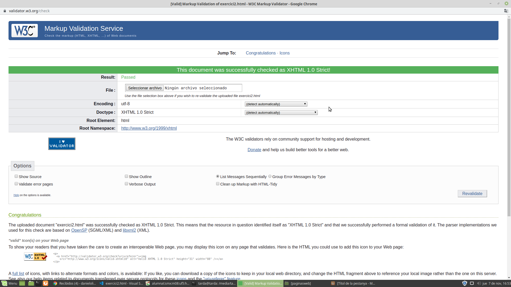

Me llamo Daniel Olivera López y tengo 19 años. Actualmente estoy estudiando algunas materias del ciclo de SMX en el 2 año. En esta UF5 de html haré una página web sobre música y sus distintas características. Dentro de unas semanas veremos el resultado de esta web.
